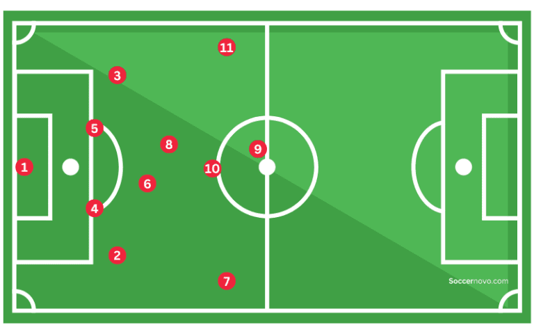

Heart Disease Prediction Interface
This project aimed to develop a predictive model distinguishing users' heart health,
accurately identifying high and low risk for heart disease. As a key contributor in a
collaborative team of three, my role focused on leading the exploratory analysis and
machine learning aspects. I meticulously compared five models to pinpoint the optimal
predictor for heart disease and acheived an accuracy of 82%, ensuring a seamless execution
of our project.

Fantasy Premier League Analysis

Developed a real-time Power BI dashboard using the FPL API for comprehensive player
and team analysis in Fantasy Premier League. I incorporated dynamic visualizations
to present intricate FPL data in an intuitive and professional manner, enhancing the
user experience and delivering valuable insights for strategic decision-making in the
realm of fantasy football."
Conducted a data-driven analysis on GPA factors, utilizing data collected from
250+ students that included their sleep and alcohol use patterns, alongside skill
test results for measuring cognitive function. Led a comprehensive research analysis,
unveiling a significant negative correlation between sleep quality and academic
performance among students. The findings provided valuable insights into the impact
of sleep on cognitive function and academic success.

With an impressive accuracy rate of 86%, this project offers football teams a comprehensive
and efficient solution for optimizing player positions and improving overall team performance.
I applied advanced machine learning techniques and robust data cleaning methods to predict the
ideal playing position for football players based on their statistics. The developed model serves
as a valuable tool for team managers, allowing them to leverage data-driven insights for strategic
decision-making regarding player positioning.

Explore my Weather Predictor project, a dynamic venture that forecasts future weather conditions based on comprehensive analysis of historical data. By utilizing advanced data analytics and predictive modeling techniques, this project offers accurate insights into upcoming atmospheric patterns. Uncover the potential of data-driven weather prediction, providing valuable forecasts grounded in historical trends for informed decision-making.